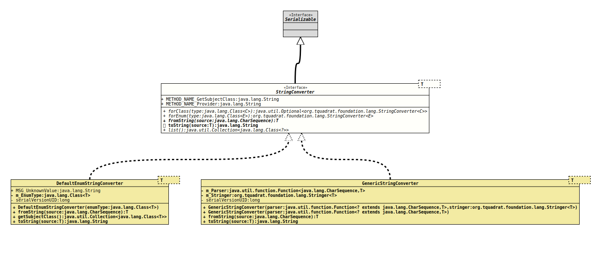

Interface StringConverter<T>
- Type Parameters:
T- The Object type for the conversion.
- All Superinterfaces:
Serializable
- All Known Implementing Classes:
DefaultEnumStringConverter,GenericStringConverter
Defines the conversion between Strings and object instances, where the concrete behaviour is defined by the implementation of the interface.
Implementations of StringConverter are meant as a tool to
translate Strings to Objects for technical purposes, not necessarily for
human convenience.
Each implementation should ensure that
StringConverter<T> c = …
T v = …
true == ( v.equals( c.fromString( c.toString( v ) );is always valid.
If that condition could not be met, this must be clearly documented.
For the other direction (from String to object back to String), this condition is weaker, as long as the result is equivalent to the original, as for numbers that can be represented as decimal, octal or hexadecimal.
An implementation of StringConverter usually holds no state and
it is possible to reuse an instance. Therefore it is recommended to provide
a public static final field INSTANCE that is initialised
with a reference for a single instance of the implementation.
- Notes:
-
- Both
fromString(CharSequence)andtoString(Object)will returnnullif called with anullargument. - Usually the
java.util.Locale.ROOTlocale is used when locale specific conversion or parsing is required; this means in particular that numbers will use the decimal point as separator. - In order to make an implementation of this interface visible for
forClass(),forEnum()andlist(), that implementation needs to be exposed as a service provider fororg.tquadrat.foundation.lang.StringConverter. - If the implementation is published as a service provider, and if it
has a static
INSTANCEfield holding the reference to an instance of the converter, the implementation should also provide a static final methodprovider()that returns that reference. - Two implementations of
StringConverterfor the same subject class may cause unpredictable results if both are exposed as service providers. - When an implementation of
StringConverteris published as a service, the subject class usually is guessed from the return value offromString(), but sometimes this does not work reliably. In that case it is required that the implementation ofStringConverterprovides a methodpublic Collection<Class<?>> getSubjectClass()that returns the respective classes.
This is definitely required, when the concrete implementation of the string converter is derived from an abstract base class; this abstract class must be visible for this module, too.
- Both
- Author:
- Thomas Thrien (thomas.thrien@tquadrat.org)
- Version:
- $Id: StringConverter.java 1107 2024-03-01 15:33:11Z tquadrat $
- Since:
- 0.1.0
- UML Diagram
-

UML Diagram for "org.tquadrat.foundation.lang.StringConverter"
{kind=link}
-
Field Summary
Fields -
Method Summary
Modifier and TypeMethodDescriptionstatic <C> Optional<StringConverter<C>> Returns an instance ofStringConverterfor the givenClass.static <E extends Enum<E>>
StringConverter<E> Returns an instance ofStringConverterfor the givenEnumtype.fromString(CharSequence source) Converts the given String to an object instance.static Collection<Class<?>> list()Returns the classes for that an instance ofStringConverteris already registered,default StringConverts the given object instance to a String.
-
Field Details
-
METHOD_NAME_GetSubjectClass
The name for the method that returns the subject classes: "getSubjectClass".- See Also:
-
METHOD_NAME_Provider
The name for the method that returns the instance: "provider".- See Also:
-
-
Method Details
-
forClass
Returns an instance ofStringConverterfor the givenClass. If there is no converter for the given type, or the type isnull, the return value isOptional.empty().- Type Parameters:
C- The class a converter is needed for.- Parameters:
type- The instance of the class a converter is needed for.- Returns:
- An instance of
Optionalthat holds the instance ofStringConverter.
-
forEnum
@API(status=STABLE, since="0.0.6") static <E extends Enum<E>> StringConverter<E> forEnum(Class<E> type) Returns an instance ofStringConverterfor the givenEnumtype. If there is no converter for the given type in the registry, a new instance ofStringConverterwill be created, based on a default implementation.- Type Parameters:
E- The class a converter is needed for.- Parameters:
type- The instance of the class a converter is needed for.- Returns:
- The requested instance of
StringConverter.
-
fromString
Converts the given String to an object instance.- Parameters:
source- The String representation for the object instance; can benull.- Returns:
- The resulting object instance; will be
nullifsourcewas alreadynull. - Throws:
IllegalArgumentException- The format of the given String is invalid and cannot be parsed into the object instance.
-
toString
Converts the given object instance to a String.- Note:
-
- Even if an implementation of
might exist for
T, it cannot be used to implement this method; will never returnnull(if implemented accordingly), for anullargument, it will return the String "null". That contradicts the contract for this method.
- Even if an implementation of
might exist for
- Parameters:
source- The object to convert; can benull.- Returns:
- The resulting String; will be
nullifsourcewas alreadynull.
-
list
Returns the classes for that an instance ofStringConverteris already registered,- Returns:
- The classes with a string converter.
-